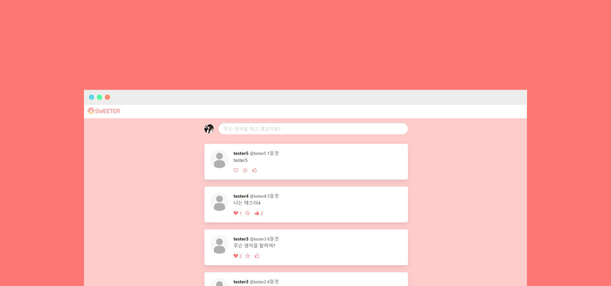

THE MISSION
SWEETER | 세상을 달달하게(이하 스위터) 프로젝트는 스파르타 웹개발 교육의 가장 마지막 강의를
클론코딩 한 것으로 회원가입과 로그인, 포스팅 작성, 프로필 수정 등 SNS의 대표적인 기능들을
사용할 수 있는 웹페이지 입니다.디자인은 bootstrap보다 조금 더 직관적인 Bulma를 사용하여 반응형이 될 수 있도록 했습니다.
python으로 api 부분을 작성했고, jinja2와 html, css, js로 템플릿 부분을 작성했습니다.

THE CONCEPT
SWEETER | 세상을 더 달달하게(이하 스위터)는 클론 코딩한 것을 손본 것으로 DB를 사용한
회원 관리와 로그인, 포스팅 작성 등을 직관적인 디자인으로 보여줄 수 있도록 했습니다.스위터라는 이름을 따라 달달한 디저트가 연상되는 색상들을 사용하였고, 파비콘 외의 아이콘 등에도 디저트 일러스트를 만들어 사용했습니다.